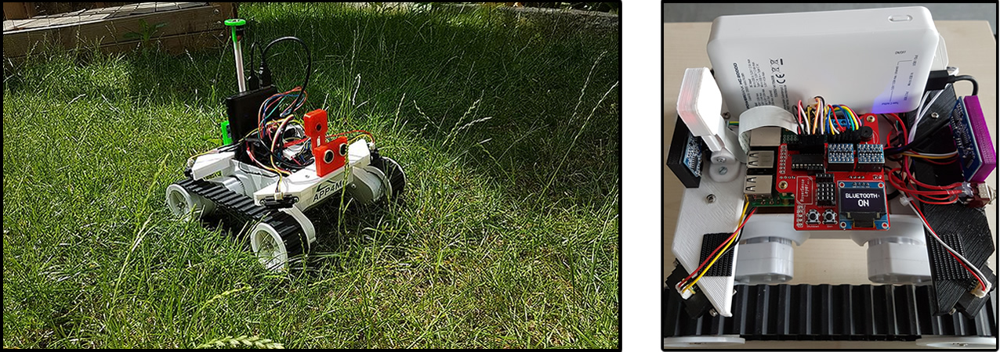
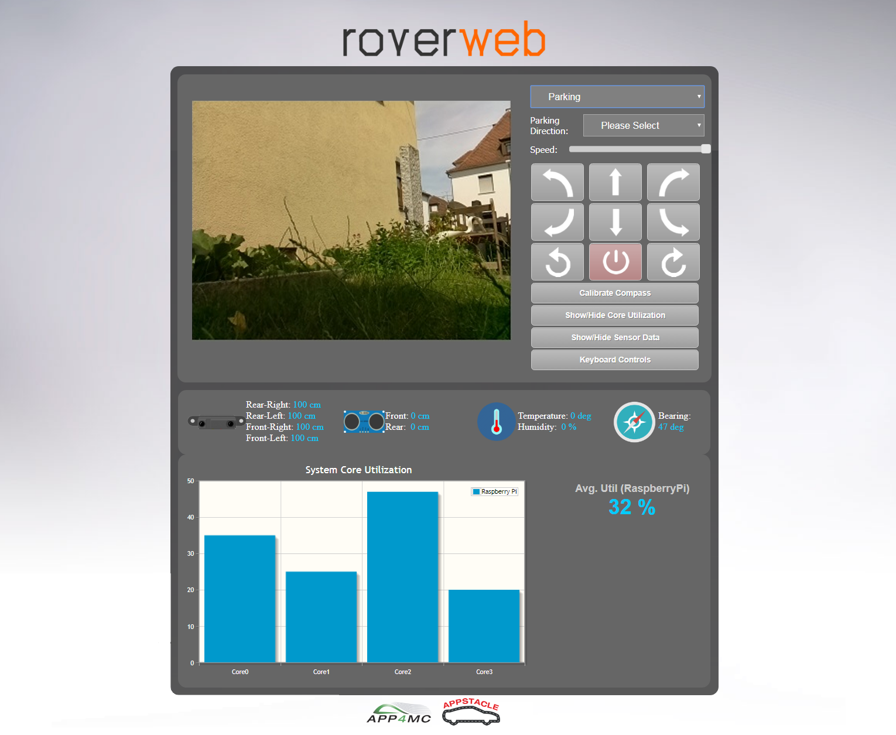
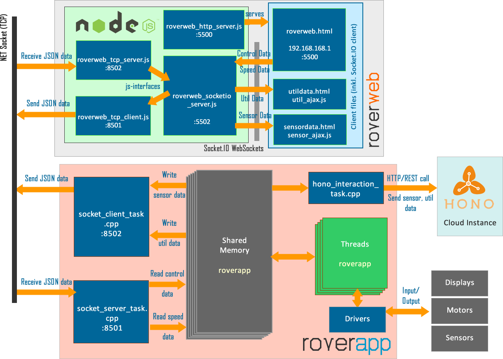

1. Introduction¶
{kind=link}
1.1. What is rover or APP4MC-rover?¶
Rover (APP4MC-rover) is an open-source mobile robot that is designed to demonstrate the outcomes of APP4MC and APPSTACLE projects. Rover features applications and tooling required to address complex research fields such as cloud communication, open-source tooling, multi-core and cluster computing. Rover is equipped with powerful sensors, motors, and display units to interact with the physical world. Furthermore, Rover uses Eclipse PolarSys project for its chassis and mechanics.
{kind=link}
Rover software, called roverapp features a multi-threaded (POSIX threads or Pthreads) C/C++ implementation that runs on Linux-based embedded single board computers (such as Raspberry Pi). Rover features countless threads dedicated to communication infrastructure, sensor driving, display unit (such as OLED displays) utilization, bluetooth communication, image processing, and behavior modes (such as Parking, Adaptive Cruise Control, Manual Driving, and Booth Modes). It also features drivers for sensors such as magnetometers, accelerometers, various ultrasonic sensors, and camera modules. Furthermore, OLED display, buttons, a buzzer are utilized.
{kind=link}
It also features a web user interface, called roverweb, that is used for many purposes such as sensor data visualization, camera streaming, displaying core utilization, and web-based robot control. Roverweb is equipped with a powerful embedded back-end that is called node.js and a main infrastructure library called socket.io. It makes use of the created javascript programs in order to create reactive web servers that communicate with websockets.
1.2. rover Motivations and Research¶
Rover is used as a demonstrator for two main subjects:

- Model-based multi-core software development evaluation and tool support (with APP4MC tool)
- For this purpose, threads are designed run in a schedulable and traceable fashion (with the help of timing library)
- System traces are taken in Common Trace Format using Linux’ perf profiler and customly created scripts.
- APP4MC is used for modeling and deployment outcomes
{kind=link}

- Cloud-based communication, data infrastructure testing (for APPSTACLE and Eclipse KUKSA projects)
- For this purpose, a cloud instance with Eclipse Hono infrastructure is connected to using popular communication techniques such as MQTT, and REST API.
- Eclipse Hono dashboard (using Grafana and InfluxDB) is configured.
1.3. rover Infrastructure¶
A small yet crucial portion of Rover’s infrastructure (especially addressing network infrastructure) is given below. Rover uses javascript object notation (JSON) format for the information that is sent and received between processes. However, it makes use of the shared memory in order to communicate between threads.
{kind=link}
Roverapp is a C/C++ application with a single executable that makes use of its shared memory for data communication and that involves many drivers, custom libraries, external libraries, and many threads (with task functions).
Roverweb uses javascript (node.js) for its backend and javascript, jQuery, CSS, and HTML for its front-end. Roverapp to roverweb inter-process communication is handled using NET sockets and using TCP protocol, whereas roverweb front-end and back-end is connected using websockets (with HTTP and using Socket.IO events).